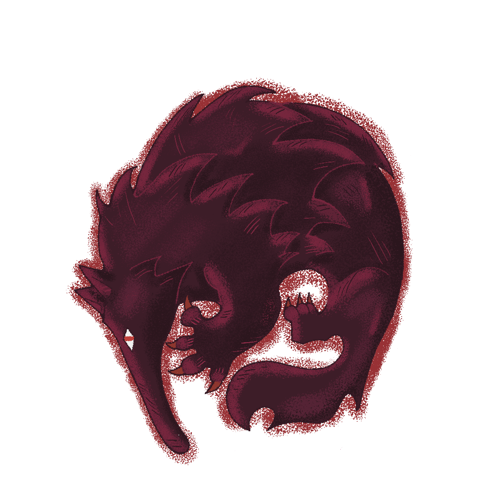
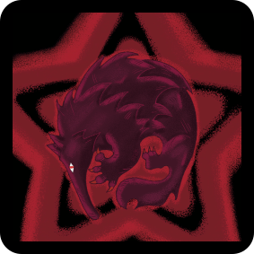
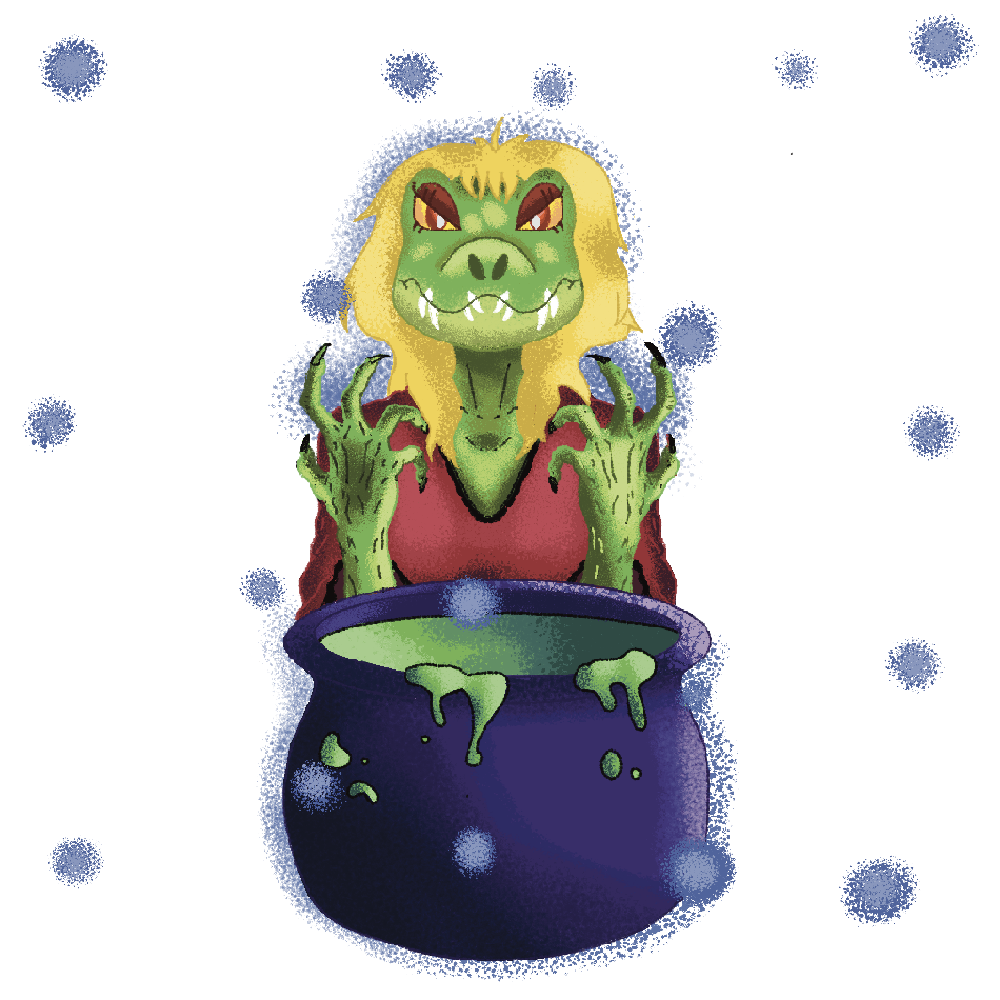
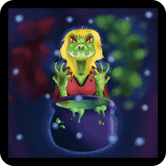
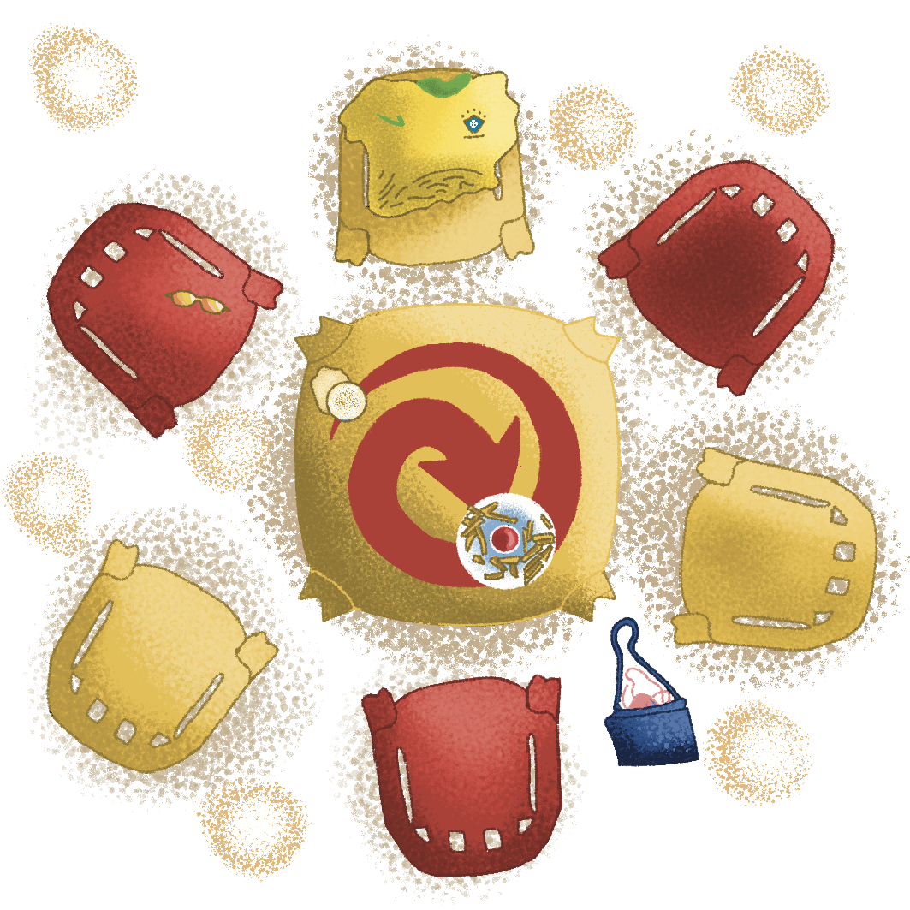
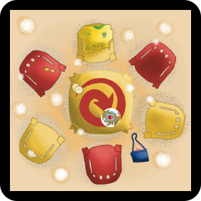

capelobo
O Capelobo é uma criatura da mitologia indígena amazônica, geralmente descrita como um ser metade humano, metade tamanduá-bandeira, com hábitos noturnos e extremamente forte. Segundo as lendas, ele se alimenta de vísceras de suas vítimas e emite um som semelhante a um assobio grave para atrair caçadores desprevenidos na floresta.
Esse folclore foi utilizado para representar a carta de lobo-assassino no jogo original alemão "Weerwolven van Wakkerdam", similar a um cidade-dorme comum, onde o objetivo final da carta na minha representação brasileira (e no jogo original) é matar todas as pessoas da roda, restando o máximo de Capelobos aliados possíveis.
✩₊˚.⋆☾𓃦☽⋆⁺₊✧

boto cor de rosa
A lenda do boto-cor-de-rosa é uma das mais famosas do folclore da Região Amazônica. Segundo a tradição popular, nas noites de festa junina e de lua cheia, o animal sai dos rios, transforma-se em um homem belo e elegante, vestindo roupas brancas e um chapéu que esconde suas narinas. Ele seduz as jovens das comunidades ribeirinhas, envolve-as em danças, engravida-as e, antes do amanhecer, retorna para a água em sua forma original de golfinho de água doce. Historicamente, a lenda era usada para justificar gravidezes que aconteciam fora do casamento ou filhos com pais desconhecidos.
Esse folclore foi utilizado para respresentar a carta do cupido no jogo original "Weerwolven van Wakkerdam", onde o Boto-cor-de-rosa (original cupido) tem como objetivo final, sobreviver. Porém, além disso, ele deverá formar um casal durante a primeira parte da noite, onde o objetivo desse casal se torna sobreviver juntos, não importa o papel de ambos, se um morre (por votação ou por assassinato) o outro morrerá junto. Não satisfeito, o boto-cor-de-rosa deve, também, escolher a casa de algum jogador (podendo variar) para dormir todas as noites, ocorrendo desse jogador ser assassinado durante a noite, o boto morrerá também, ocorrendo dos lobos atacarem a casa do boto durante a noite, o próprio estará a salvo.
𓇼 ⋆.˚ 𓆉 𓆝 𓆡⋆.˚ 𓇼

cuca
A Cuca é uma das principais personagens do folclore brasileiro, caracterizada como uma bruxa velha, feia e ranzinza que assume a forma de um jacaré com cabelos loiros e uma voz assustadora. Originária de lendas europeias como a do "bicho-papão" e da "Coca", ela habita cavernas escuras e passa o tempo tramando feitiços ou fabricando poções mágicas, segundo a lenda popular, imortalizada na literatura de Monteiro Lobato no Sítio do Picapau Amarelo.
Esse folclore foi utilizado para respresentar a carta da bruxa no jogo original "Weerwolven van Wakkerdam", onde a Cuca tem como objetivo final, sobreviver. Porém, além disso, a Cuca tem em seu seu inventário duas poções que estão disponíveis a qualquer momento durante a noite, sendo uma de reviver alguém que foi morto e outra de matar alguém que está vivo. A Cuca poderá escolher quando e em quem utilizar essas poções, do modo que quiser, durante sua rodada durante a noite, podendo até utilizar em si mesma se for morta. Ambas poções só podem ser utilizadas uma vez, então escolha com cuidado suas vítimas.
⋆⊱༻ཐི༏ཋྀ༺⊰⋆

cidadão

O cidadão comum, como na realidade, tem apenas como propósito seu voto popular. Não há forças sobrenaturais que te ajudem a encarar o que seu destino te aguarda.
O cidadão comum pode votar após as rodadas das noites em quem suspeita ser o Capelobo, e além disso, pode morrer. A não ser que você seja parte do famigerado Romeu e Julieta, onde sucumbirá a tristeza de presenciar a morte de seu amado(a), e irá segui-lo até a morte. A carta do cidadão é representada como a icônica mesa de boteco/bar, que representa a reunião popular e momentos de comunidade que temos no dia-a-dia, muito fofo né?
˚₊‧꒰ა ✦ ໒꒱ ‧₊˚
